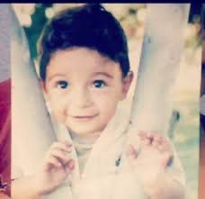

Fotografía de Gera MX durante su infancia
Cuando era muy pequeño, Gera MX se mudó a San Luis Potosí junto con su madre. Durante su infancia vivió diversas experiencias que marcaron su personalidad y su forma de ver la vida. Enfrentó dificultades económicas y momentos complicados que más adelante servirían de inspiración para muchas de sus canciones.
Estas experiencias le permitieron desarrollar una visión realista de su entorno, algo que posteriormente se convertiría en una de las características más importantes de sus letras, las cuales suelen transmitir historias personales, superación y perseverancia.
Desde muy joven mostró un gran interés por la música urbana y el rap. Durante su adolescencia comenzó a escuchar artistas y agrupaciones mexicanas como Control Machete, Cartel de Santa y Molotov, quienes influyeron notablemente en su estilo musical.
Mientras cursaba la secundaria empezó a improvisar rimas con sus amigos y a escribir sus propias letras. Poco a poco descubrió que la música era una forma de expresar sus emociones y experiencias, lo que lo llevó a desarrollar su talento y a buscar oportunidades dentro de la escena del rap mexicano.
Su pasión por la escritura y la improvisación creció con el paso de los años, sentando las bases de la exitosa carrera que construiría más adelante como uno de los artistas más representativos del rap en México.